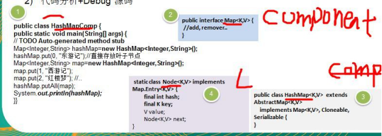

# 看一个学校院系展示需求
编写程序展示一个学校院系结构：需求是这样，要在一个页面中展示出学校的院系组成，一个学校有多个学院， 一个学院有多个系。如图：
# 统方案解决学校院系展示 (类图)
# 传统方案解决学校院系展示存在的问题分析
将学院看做是学校的子类，系是学院的子类，这样实际上是站在组织大小来进行分层次的
实际上我们的要求是 ：在一个页面中展示出学校的院系组成，一个学校有多个学院，一个学院有多个系， 因此这种方案，不能很好实现的管理的操作，比如对学院、系的添加，删除，遍历等
解决方案：把学校、院、系都看做是组织结构，他们之间没有继承的关系，而是一个树形结构，可以更好的实现管理操作。 => 组合模式
# 组合模式基本介绍
# 基本介绍
组合模式（Composite Pattern），又叫部分整体模式，它创建了对象组的树形结构，将对象组合成树状结构以表示 “整体部分” 的层次关系。
组合模式依据树形结构来组合对象，用来表示部分以及整体层次。
这种类型的设计模式属于结构型模式。
组合模式使得用户对单个对象和组合对象的访问具有一致性，即：组合能让客户以一致的方式处理个别对象以及组合对象
# 组合模式原理类图

对原理结构图的说明 - 即 (组合模式的角色及职责)
Component : 这是组合中对象声明接口，在适当情况下，实现所有类共有的接口默认行为，用于访问和管理 Component 子部件，Component 可以是抽象类或者接口
Leaf : 在组合中表示叶子节点，叶子节点没有子节点
Composite : 非叶子节点， 用于存储子部件， 在 Component 接口中实现 子部件的相关操作，比如增加 (add), 删除。
# 组合模式解决学校院系展示的 应用实例
# 应用实例要求
编写程序展示一个学校院系结构：需求是这样，要在一个页面中展示出学校的院系组成，一个学校有多个学院， 一个学院有多个系。
思路分析和图解 (类图)
- 代码实现
public abstract class OrganizeComponent { | |
private String name; | |
private String desc; | |
public OrganizeComponent(String name, String desc) { | |
this.name = name; | |
this.desc = desc; | |
} | |
protected void add(OrganizeComponent component){ | |
throw new UnsupportedOperationException(); | |
} | |
protected void remove(OrganizeComponent component){ | |
throw new UnsupportedOperationException(); | |
} | |
protected abstract void print(); | |
public String getName() { | |
return name; | |
} | |
public void setName(String name) { | |
this.name = name; | |
} | |
public String getDesc() { | |
return desc; | |
} | |
public void setDesc(String desc) { | |
this.desc = desc; | |
} | |
} |
public class Department extends OrganizeComponent { | |
public Department(String name, String desc) { | |
super(name, desc); | |
} | |
@Override | |
protected void print() { | |
System.out.println(getName()); | |
} | |
} |
public class University extends OrganizeComponent { | |
List<OrganizeComponent> componentList; | |
public University(String name, String desc) { | |
super(name, desc); | |
componentList = new ArrayList<OrganizeComponent>(); | |
} | |
@Override | |
protected void add(OrganizeComponent component) { | |
componentList.add(component); | |
} | |
@Override | |
protected void remove(OrganizeComponent component) { | |
componentList.remove(component); | |
} | |
protected void print() { | |
System.out.println("-------------" + getName() + "-------------"); | |
componentList.forEach(c -> c.print()); | |
} | |
} |
public class College extends OrganizeComponent { | |
List<OrganizeComponent> componentList; | |
public College(String name, String desc) { | |
super(name, desc); | |
componentList = new ArrayList<OrganizeComponent>(); | |
} | |
@Override | |
protected void add(OrganizeComponent component) { | |
componentList.add(component); | |
} | |
@Override | |
protected void remove(OrganizeComponent component) { | |
componentList.remove(component); | |
} | |
protected void print() { | |
System.out.println("-------------" + getName() + "-------------"); | |
componentList.forEach(c -> c.print()); | |
} | |
} |
public static void main(String[] args) { | |
OrganizeComponent university = new University("清华大学", ""); | |
OrganizeComponent college1 = new College("软件学院", ""); | |
OrganizeComponent college2 = new College("信息与控制工程学院", ""); | |
OrganizeComponent dep1 = new Department("软件工程", ""); | |
OrganizeComponent dep2 = new Department("网络工程", ""); | |
OrganizeComponent dep3 = new Department("计算机科学与技术", ""); | |
OrganizeComponent dep4 = new Department("通信工程", ""); | |
OrganizeComponent dep5 = new Department("自动化", ""); | |
university.add(college1); | |
university.add(college2); | |
college1.add(dep1); | |
college1.add(dep2); | |
college1.add(dep3); | |
college2.add(dep4); | |
college2.add(dep5); | |
university.print(); | |
// 输出 | |
/** | |
* ------------- 清华大学 ------------- | |
* ------------- 软件学院 ------------- | |
* 软件工程 | |
* 网络工程 | |
* 计算机科学与技术 | |
* ------------- 信息与控制工程学院 ------------- | |
* 通信工程 | |
* 自动化 | |
*/ | |
} |
# 组合模式在 JDK 集合的源码分析
Java 的集合类 -HashMap 就使用了组合模式
代码分析 + Debug 源码

- 类图
组合模式的注意事项和细节
简化客户端操作。客户端只需要面对一致的对象而不用考虑整体部分或者节点叶子的问题。
具有较强的扩展性。当我们要更改组合对象时，我们只需要调整内部的层次关系，客户端不用做出任何改动.
方便创建出复杂的层次结构。客户端不用理会组合里面的组成细节，容易添加节点或者叶子从而创建出复杂的树形结构
需要遍历组织机构，或者处理的对象具有树形结构时，非常适合使用组合模式.
要求较高的抽象性，如果节点和叶子有很多差异性的话，比如很多方法和属性都不一样，不适合使用组合模式